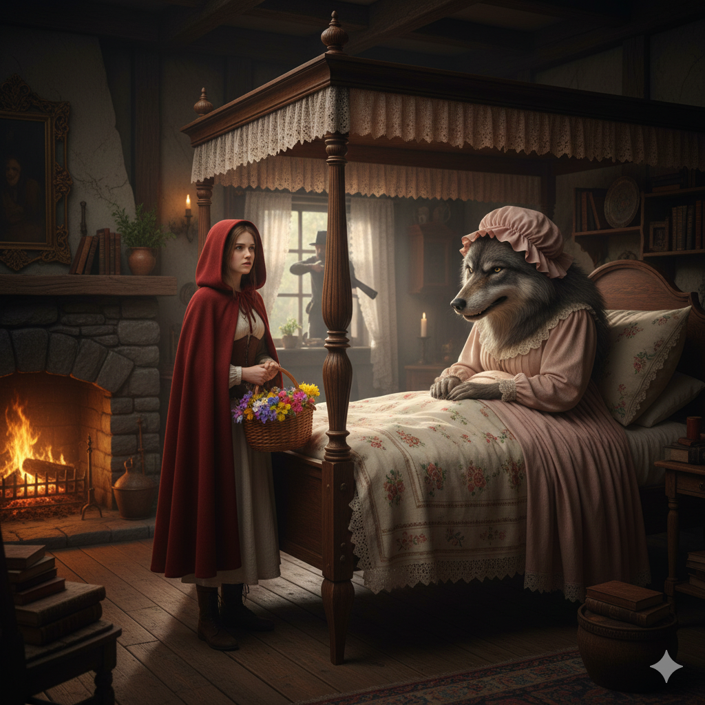

Había una vez una niña muy bonita. Su madre le había hecho una capa roja y la muchachita la llevaba tan a menudo que todo el mundo la llamaba Caperucita Roja.
Un día, su madre le pidió que llevase unos pasteles a su abuela que vivía al otro lado del bosque, recomendándole que no se entretuviese por el camino, pues cruzar el bosque era muy peligroso, ya que siempre andaba acechando por allí el lobo.
Caperucita Roja recogió la cesta con los pasteles y se puso en camino. La niña tenía que atravesar el bosque para llegar a casa de la Abuelita, pero no le daba miedo porque allí siempre se encontraba con muchos amigos: los pájaros, las ardillas... De repente vio al lobo, que era enorme, delante de ella.
- ¿A dónde vas, niña? - le preguntó el lobo con su voz ronca.
- A casa de mi Abuelita - le dijo Caperucita.
- No está lejos - pensó el lobo para sí, dándose media vuelta.
Caperucita puso su cesta en la hierba y se entretuvo cogiendo flores: - El lobo se ha ido -pensó-, no tengo nada que temer. La abuela se pondrá muy contenta cuando le lleve un hermoso ramo de flores además de los pasteles.
Mientras tanto, el lobo se fue a casa de la Abuelita, llamó suavemente a la puerta y la anciana le abrió pensando que era Caperucita. Un cazador que pasaba por allí había observado la llegada del lobo.
El lobo devoró a la Abuelita y se puso el gorro rosa de la desdichada, se metió en la cama y cerró los ojos. No tuvo que esperar mucho, pues Caperucita Roja llegó enseguida, toda contenta. La niña se acercó a la cama y vio que su abuela estaba muy cambiada.
- Abuelita, abuelita, ¡qué ojos más grandes tienes!
- Son para verte mejor - dijo el lobo tratando de imitar la voz de la abuela.
- Abuelita, abuelita, ¡qué orejas más grandes tienes!
- Son para oírte mejor - siguió diciendo el lobo.
- Abuelita, abuelita, ¡qué dientes más grandes tienes!
- Son para...¡comerte mejoooor! - y diciendo esto, el lobo malvado se abalanzó sobre la niñita y la devoró, lo mismo que había hecho con la abuelita.